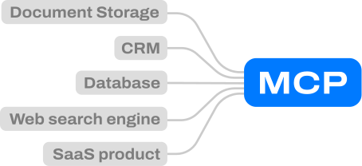
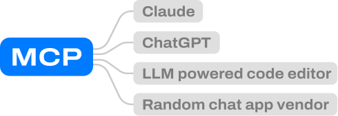
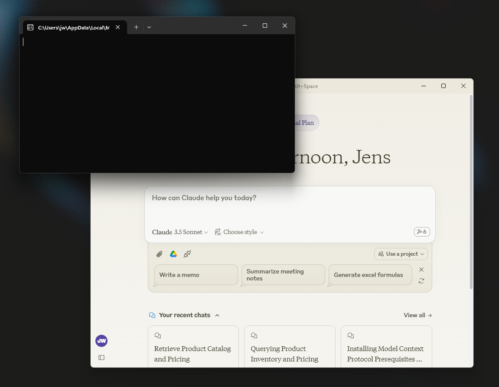
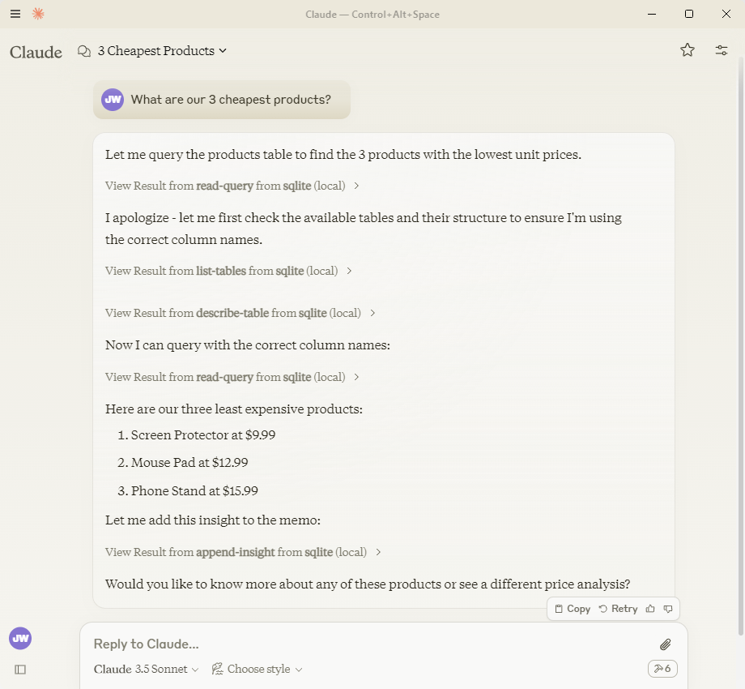
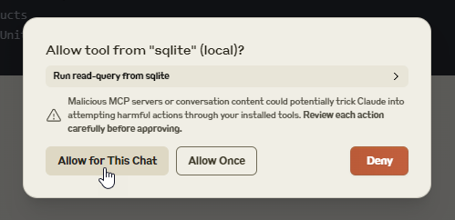

{#
  {
    "title": "Standardized LLM integrations?",
    "subtitle": "Model Context Protocol - first impressions",
    "date": "2023-11-27",
    "category": "Programming",
    "tags": ["AI", "LLM", "Claude"],
    "unlisted": true
  }
#}

{% extends "_base.html" %}

{% block content %}

  <div class="content xtu-page">
    <div class="content-body max-width">
      <h1 class="blog-title">{{ title }}</h1>
      <h3 class="blog-subtitle">{{ subtitle }}</h3>
      <p>
        Anthropic released something they call the Model Context Protocol. This is an open standard for building LLM integrations. It hopes to establish a standard integration protocol, meaning vendors of chat application integrations (i.e.) tools should only have to build one integration to support multiple chat apps:
      </p>

      <p class="toggle-label">I want to read about:</p>
      <div class="toggle-container">
          <div class="switch-field">
            <input type="radio" id="radio-why" name="switch-two" value="why" checked/>
            <label for="radio-why">The why</label>
            <input type="radio" id="radio-test" name="switch-two" value="test"/>
            <label for="radio-test">Hands-on impressions</label>
          </div>
      </div>

      <div id="why-content">
        <h2>Vendors build once</h2>
        <p>
          Of course - the promise to anyone who is building or maintaining a system or any record of data is this: You can build one MCP implementation, and suddenly you have integrations to "all the big LLM powered applications". Or of course, that last part is the hope of the MCP creators.
        </p>

        <div class="blog-image-container">
          
        </div>
        <p class="image-subtitle">
          Each vendor of software builds one MCP server implementation
        </p>

        <h2>LLM apps implement support once</h2>
        <p>
          To anyone that is a vendor of a chat application the promise is very similar: implement support for MCP and suddenly you are integrated with a bunch of tools and data sources. Keep in mind that the list of these applications is not just ChatGPT, Claude, Gemini, Copilot. There's a plethora of "ChatGPT wrappers", applications built on top of the LLM providers. Any one of these can implement MCP support on their own, and all of a sudden you'll have a large catalog of "supported integrations" or data sources.
        </p>

        <div class="blog-image-container">
          
        </div>
        <p class="image-subtitle">
          LLM apps build MCP clients once
        </p>

        <h2>SaaS vendors should take note</h2>
        <p>
          It might be obvious that document storage services - services like Google Drive, Dropbox, box.com - has an obvious use case for this. But any SaaS vendor should perhaps follow this initiative. What if you could give users of your product the ability to interface with it through whatever AI chat that they are using?
        </p>

        <h2>Standards are as good as their uptake</h2>
        <p>
          Of course, any standard is only as good as its' uptake. Time will tell how MCP pans out, but the timing feels right to me. The ecosystem of LLM powered apps and systems that want to integrate into them has grown at an insane pace the last 2 years. The amount of duplicate work that has been done on building integrations to things like Google Drive, Git, etc. in different applications is staggering. There's definitively a place for a standard like MCP. Let's see where it goes!
        </p>

        <h2>Links</h2>
        <ul>
          <li><a href="https://www.anthropic.com/news/model-context-protocol">
            Anthropic's announcement post
          </a></li>
          <li><a href="https://modelcontextprotocol.io">
            The MCP website
          </a></li>
        </ul>
      </div>

      <div id="test-content" style="display: none;">
        <h2>Available right now</h2>
        <p>
          If you want to try out implementations of MCP, you can do it right now. Anthropic has released support for MCP in their desktop app, and two 3rd party LLM apps have as well. Along with this, they have released a few reference implementations of MCP servers.
        </p>

        <h2>Trying out Claude with sqlite</h2>
        <p>
          Claude has a quick "Getting Started" guide for MCP. I gave it a shot to see how it works. It is very much in early stages, and obviously they are not trying to make this visible to all users of the program. So clearly setup and the experience is something that will change over time.
        </p>

        <h2>Setup</h2>
        <p>
          Setup is clearly targeted at developers right now. To begin with, one have to initialize an sqlite database, and also install uv - which is a python package manager. To set it up you have to go to the settings panel under Developer Settings. From there there's a simple visualization of installed MCP servers, but to edit the list you have to open a JSON config file. After the JSON file has been edited you have to restart the application to pick up the changes. You may have to kill processes in task manager, it seemed to me like there was some sort of background that is left running when simply quitting the application.
        </p>

        <div class="blog-image-container">
          
        </div>
        <p class="image-subtitle">
          How Claude Desktop looks at startup. Note the terminal window and the new "connector" icon below the chat input.
        </p>

        <h2>Usage</h2>
        <p>
          The Claude desktop app knows via our configuration what MCP servers are running on our computer. It will ask all installed MCP servers for their capabilities. In conversations, it can decide that it's suitable to call on an MCP server for a given functionality. In our example below the server has performed the following steps:
          <ul>
            <li><b>read-query:</b> Tried to do a query to the database - this query failed, since it just hallucinated a table name without calling the MCP server first to see what tables are available</li>
            <li><b>list-tables:</b> Asked the MCP server what tables are available. It received the available tables (our product table).
            <li><b>describe-table:</b> It asked for the structure of the Product table, what fields are available etc.</li>
            <li><b>read-query:</b> Now it decided it had enough information to perform the actual query, and tried the read-query method again. This time it got a result back.</li>
          </ul>

          Using this information, Claude put together an answer for us. <span class="subtle">(It actually triggers a tool called append-insight after as well, which means that it saves the answer to the database - which is used for another demo feature that we won't look at here).</span>
        </p>

        <div class="blog-image-container">
          
        </div>
        <p class="image-subtitle">
          A question and an answer from Claude including a call out to an MCP server
        </p>

        <p style="margin-top: 4rem;">
          The Claude desktop app warns us when it uses an MCP server. When testing this, the "Allow for this chat" button did not work. It kept asking me to allow it for every tool call. Just one more symptom of this being an early stage feature.
        </p>

        <div class="blog-image-container">
          
        </div>
        <p class="image-subtitle">
          The MCP warning in Claude
        </p>

        <h2>In general</h2>
        <p>
          It's clear that this is an early stage feature and right now it's in a state where they are releasing the tools to developers to get the thing going. It's only worth anything if there's a critical mass of MCP servers and MCP clients. It's not a feature for end users at this point.
        </p>

        <h2>Links</h2>
        <ul>
          <li><a href="https://modelcontextprotocol.io/quickstart">The quickstart guide from MCP</a></li>
          <li><a href="https://github.com/modelcontextprotocol/servers/tree/main/src/sqlite">The sqlite example MCP server</a></li>
        </ul>
      </div>


      <style>
        .toggle-container {
          margin: 1.3rem auto 7rem auto;
          text-align: center;
          display: flex;
          align-items: center;
          justify-content: center;
          gap: 2em;
        }
        
        .toggle-container::before,
        .toggle-container::after {
          content: '';
          height: 1px;
          flex: 1;
          background: rgba(0, 0, 0, 0.12);
        }

        .toggle-label {
          width: 100%;
          text-align: center;
          margin: 0;
          font-weight: 500;
          color: hsl(0, 0%, 20%);
          font-size: 1.6rem;
          margin-top: 5rem;
        }

        .switch-field {
          display: inline-flex;
          overflow: hidden;
          background: #fff;
          border-radius: 28px;
          box-shadow: 0 1px 3px rgba(0,0,0,0.12), 0 1px 2px rgba(0,0,0,0.24);
          transition: all 0.3s cubic-bezier(.25,.8,.25,1);
          transform: scale(1.2);
        }

        .switch-field input {
          position: absolute !important;
          clip: rect(0, 0, 0, 0);
          height: 1px;
          width: 1px;
          border: 0;
          overflow: hidden;
        }

        .switch-field label {
          background-color: transparent;
          color: rgba(0, 0, 0, 0.6);
          font-size: 16px;
          font-weight: 500;
          line-height: 1;
          text-align: center;
          padding: 16px 32px;
          margin: 0;
          transition: all 0.2s ease-in-out;
          cursor: pointer;
        }

        .switch-field label:hover {
          color: rgba(0, 0, 0, 0.87);
          background-color: rgba(33, 150, 243, 0.08);
        }

        .switch-field input:checked + label {
          background-color: hsl(207, 90%, 54%);
          color: white;
          box-shadow: 0 1px 3px rgba(0,0,0,0.12);
        }

        .switch-field label:first-of-type {
          border-right: 1px solid rgba(0, 0, 0, 0.12);
        }
      </style>

      <script>
        document.querySelectorAll('input[name="switch-two"]').forEach(input => {
          input.addEventListener('change', function() {
            document.getElementById('why-content').style.display = 
              this.value === 'why' ? 'block' : 'none';
            document.getElementById('test-content').style.display = 
              this.value === 'test' ? 'block' : 'none';
          });
        });
      </script>
    </div>
  </div>

{% endblock %}

